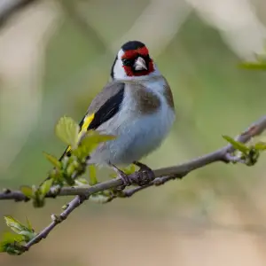
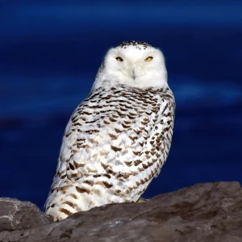
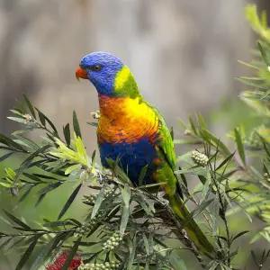

3 SPECIES
The European Goldfinch (*Carduelis carduelis*) is a small songbird native to Europe, known for its colorful plumage and cheerful song. It is often found in open woodlands, gardens, and grasslands.
Read More
The Snowy Owl (*Bubo scandiacus*) is a large owl found in the Arctic regions of North America and Eurasia. It is known for its striking white feathers and its ability to adapt to cold climates.
Read More
The Rainbow Lorikeet (*Trichoglossus moluccanus*) is a colorful parrot species found in Australia. It has vibrant plumage, including green, blue, and red feathers, and is known for its playful behavior.
Read More